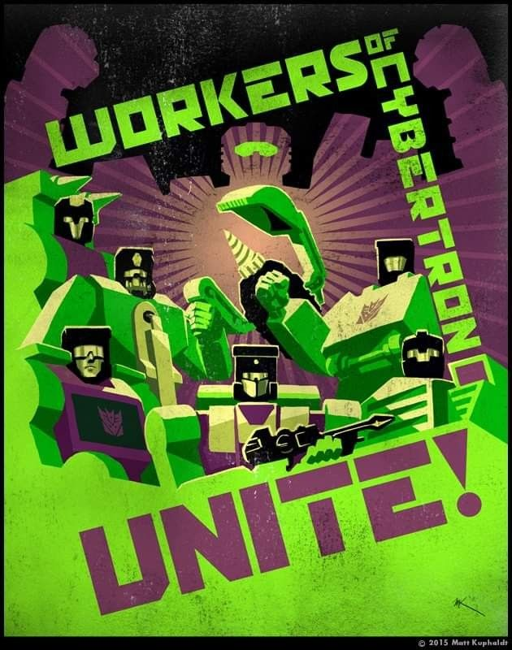

Los Decepticons eran obreros antes de ser villanos
En varias versiones del lore de Transformers, los Decepticons no nacieron como conquistadores malvados. Originalmente, eran parte de la clase obrera en Cybertron, explotados por la élite Autobot. Su rebelión, liderada por Megatron, comenzó como un movimiento revolucionario que buscaba igualdad y justicia.
Sin embargo, con el tiempo, su lucha se volvió más agresiva y violenta. Megatron adoptó una filosofía de dominación total como medio para alcanzar la paz, lo que derivó en una guerra civil catastrófica. Esta transformación ideológica fue lo que marcó su caída: de luchadores por la libertad a enemigos del libre albedrío.
Esta historia agrega una dimensión trágica al conflicto entre Autobots y Decepticons. No es solo una lucha entre el bien y el mal, sino una metáfora sobre poder, corrupción y la delgada línea entre revolución y tiranía. Es uno de los elementos que ha hecho que Transformers trascienda su origen como línea de juguetes.
← Volver a curiosidades de Transformers